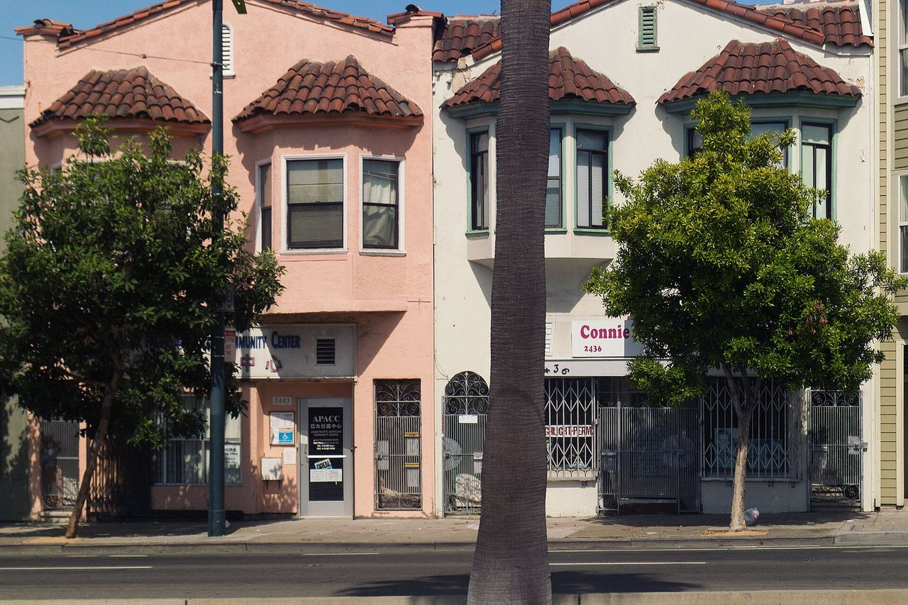

Visitacion Valley
The city's Visitacion Valley analysis neighborhood, in the south-eastern corner of the city between McLaren Park and the county line. Coverage begins with the parcels the Office of the Assessor-Recorder photographed for tax assessment in 1955 and 1964.

Map
Named buildings and landmarks
-

-
-
Streets documented so far
- Arleta Avenue
1 building, built 1912. - Bay Shore Boulevard
2 buildings, built 1930–1955. - Leland Avenue
1 building. - Raymond Avenue
1 building, built 1940. - Schwerin Street
1 building, built 1939. - Teddy Avenue
1 building, built 2009. - Tocoloma Avenue
1 building, built 1936; 1 in the Little Hollywood Historic District. - Visitacion Avenue
1 building, built 1934.
Parks and public spaces
- Herz Playground
Neighborhood park or playground, 7.0 acres. - Kelloch & Velasco Park
Neighborhood park or playground, 2.0 acres. - Little Hollywood Park
Neighborhood park or playground, 1.5 acres. - Panorama Park
Neighborhood park or playground, 2.3 acres. - Signal Point
Neighborhood park or playground, 2.0 acres. - Visitacion Valley Greenway
Neighborhood park or playground, 2.4 acres. - Yik Oi Huang Peace & Friendship Park
Neighborhood park or playground, 2.3 acres.
Adjacent neighborhoods
McLaren Park closes the valley to the west, with the Excelsior beyond it. Portola adjoins north-east and Bayview Hunters Point east across Bayshore Boulevard; the San Mateo County line is the southern edge.